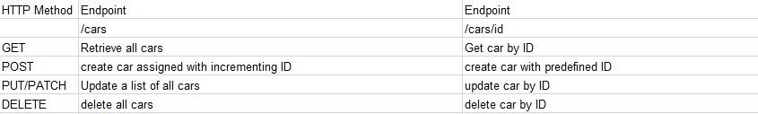

CRUD is the corner stone of any application, we want to be able to create read update and delete content in almost any application. Without it this website wouldn't be able to teach you how to do any of this! This following page will guide you through how to implement some basic crud methods in nodeJS and express
Before any implementation should begin, it is a good idea to create an overview of how your API should function
The GET method as the name suggests is a method that gets something. It could be an entire file or some sort of data